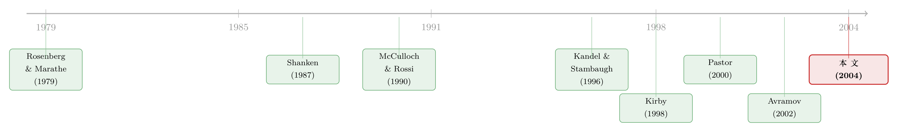

半信半疑的资产定价：当一个投资者既不全信模型，也不全信数据
本文读的是 Avramov (2004, Review of Financial Studies)：作者把「资产定价模型对可预测性的约束」当成投资者的先验锚点，让样本证据去更新这份信念，再据此配置资产。核心发现有点反直觉——在事后样本里，死信模型的组合夏普比最低，完全无视模型次低；真正赢的，是把模型与数据各取一半的「收缩」配置。而且，这一切都是在承认预期收益随时间变化的前提下做的。
1 一道「非黑即白」的旧题
把一个资产定价模型拿去检验，统计学只会给你两种答案：拒绝，或者不拒绝。
这是金融计量这几十年的标准动作。你跑一个 Gibbons-Ross-Shanken (1989) 检验，或者用 Hansen (1982) 的广义矩估计 (generalized method of moments, GMM) 去检定一组定价约束，最后落到一张 p 值上——模型「成立」或「不成立」，二选一。
可问题是，没有哪个真实的投资者活在这样一个非黑即白的世界里。
一个面对真金白银的人，心里想的从来不是「这个模型在 5% 显著性水平上被拒绝了吗」，而是「我该多大程度上相信它，然后据此把钱怎么分」。模型也许有偏误，但偏误也许很小;数据里也许藏着真信号，但也可能只是噪声。在「全信」与「全不信」之间，是一整片被传统检验粗暴抹平的灰色地带。
Avramov (2004) 这篇文章，做的就是一件事：把这片灰色地带重新铺开，并且给它装上一把可以度量的尺子。而那把尺子，不是 t 值，而是一个投资者最终愿意怎样配置他的组合。
2 可预测性，到底是「风险」还是「错」
故事要从一个老争论说起。
金融经济学家早就发现，一些经济变量——比如 股利收益率 (dividend yield)、期限利差 (term spread)——能够预测未来的股票收益 [Campbell (1987)]。（关于股利收益率到底能不能预测收益这桩公案，可参见《股利收益率真能预测收益吗？》与《股利收益率到底能不能预测收益？》。）
但「能预测」这件事，有两种截然相反的解读。
一派说：这是理性定价。预期收益本来就该随时间变化，因为风险溢价 (risk premia) 在变。股利收益率高的时候，正是市场要求更高补偿的时候——可预测性，是风险的影子。
另一派说：这是定价错误。模型抓不住的那部分系统性偏差（mispricing），恰好被这些变量捕捉到了——可预测性，是模型失灵的证据。
Campbell (1987)、Ferson and Korajczyk (1995)、Kirby (1998) 这些研究，都在用统计手段去裁决这场官司。但它们仍然没跳出「拒绝/不拒绝」的框。
Avramov 的切入点是：先别急着站队。把这两种解读，写成同一个方程里的两个加项。
3 一个把可预测性「拆成两半」的框架
这就是本文模型一节的核心。我们一步步来看。
第一步，给收益建模。 把 N 个资产的超额收益写成一个带时变截距的因子模型：
$$ r_t = a(z_{t-1}) + b\,f_t + u_{rt} $$
$$ a(z_{t-1}) = a_0 + a_1 z_{t-1} $$
这里 f_t 是 K 个组合型因子（如 FF 三因子）的超额收益，z_{t-1} 是上期末观测到的预测变量，b 是（时不变的）beta，而 a(z_{t-1}) 是定价误差——它由一个固定部分 a_0 和一个随预测变量变化的时变部分 a_1 z_{t-1} 组成。把 alpha 写成信息变量的线性函数，这一招最早可追溯到 Rosenberg and Marathe (1979)。
第二步，给因子和预测变量建模。 因子的条件期望就是风险溢价，也允许它随 z 变化：
$$ f_t = l(z_{t-1}) + u_{ft}, \qquad l(z_{t-1}) = l_0 + l_1 z_{t-1} $$
预测变量本身则服从一阶向量自回归 (vector autoregression, VAR)——这套设定在 Kandel and Stambaugh (1996)、Stambaugh (1999)、Avramov (2002) 里都用过：
$$ z_t = a_z + A_z z_{t-1} + u_{zt} $$
第三步，请出定价模型。 一个条件版本的资产定价模型，断言的是：
$$ E(r_t \mid z_{t-1}) = b\,l(z_{t-1}) $$
也就是说，资产的条件期望收益，只能等于 beta 乘以风险溢价。多一分都不行。
第四步，也是最关键的一步——对照。 把上面的收益过程，与一个普通的 预测回归 (predictive regression)
$$ r_t = m_0 + m_1 z_{t-1} + v_t $$
逐项匹配，作者得到了一组漂亮的恒等式：
$$ m_0 = a_0 + b\,l_0, \qquad m_1 = a_1 + b\,l_1 $$
我们盯住第二个看。它把「收益的可预测性」（回归斜率 m_1，这是数据里能直接量出来的东西）干净地拆成了两半：
这个分解，就是整篇文章的灵魂。
可预测性 m_1 一旦存在，要么来自 a_1（模型错了，且错得随经济状况变化），要么来自 b\,l_1（风险溢价在动，模型没错）。而一个定价模型成立，等价于 a(z_{t-1}) = 0，于是约束就收紧为：
$$ m_0 = b\,l_0, \qquad m_1 = b\,l_1 $$
换句话说：在一个模型成立的世界里，预测回归的截距和斜率，必须等于 beta 乘以「因子对预测变量回归」的截距和斜率。 这正是 Kirby (1998) 笔下「理性定价对可预测性施加的约束」。
到这里，故事的张力被彻底点亮了：Campbell 们用统计检验去问「a_1 是不是显著不为零」，而 Avramov 要问的是——如果我只是半信这个约束，我会怎么投资？
4 把「信几分」写成一个先验
接着，一个自然的问题是：怎么把「半信半疑」这件事，数学化？
作者请出贝叶斯框架，构造了三类投资者：
- 完全怀疑论者：把定价模型当废纸，
a_0、a_1自由游走，先验无信息。 - 完全信徒：把
a_0 = a_1 = 0当成铁律，模型精确成立。 - 中间派：既不把模型奉为教条，也不弃如敝屣。
中间派才是主角。沿用 Pastor and Stambaugh (1999, 2000) 和 Pastor (2000) 的思路，作者用一个先验，把「定价误差有多大」这件事的不确定性参数化。对固定定价误差 a_0，先验是：
$$ P(a_0 \mid \Sigma_{RR}) \;\propto\; |\,\sigma^2 \Sigma_{RR}\,|^{-1/2}\,\exp\!\left(-\tfrac{1}{2}\,a_0'\,(\sigma^2 \Sigma_{RR})^{-1}\,a_0\right) $$
这里的 σ 是信心参数：σ 越小，先验越紧地把 a_0 摁在零附近，意味着越相信模型。注意先验把定价误差与残差协方差矩阵 Σ_RR 绑在一起——这是 MacKinlay (1995) 的洞见：若两者独立，光靠把检验资产塞进组合就能造出高得离谱的夏普比，所以先验必须压住这种可能。
这个「信心」σ，有一个特别直观的翻译。作者证明，本文第二种（更强的）先验等价于：投资者在看真实数据之前，先看了一个长度为 T_0 的「假想样本」，而这个假想样本是刻意倾向于「模型对、且没有可预测性」的。σ 越小，T_0 越大——你脑子里预装的、偏向模型的「数据」就越多。
这层等价关系，落到一个公式上：
$$ T_0 = \frac{s^2}{\sigma^2}\,(1 + SR^2) $$
其中 s^2 是残差方差的横截面均值，SR^2 是仅用基准资产构造的切点组合的平方夏普比。作者给了一组让人印象深刻的数字：取 s^2 = 0.0011（同 Pastor (2000)）、SR^2 = 0.09，则信心 σ = 1%、0.5%、0.1% 分别对应 T_0 = 12、48、1200 个月的假想样本。
你看，「我有多信这个模型」这种含混的心理状态，被翻译成了「我心里预装了 12 个月、还是 100 年的、偏向模型的假数据」——一把可以拧动的旋钮。
5 收缩：藏在两个极端之间的甜点
然后，真正关键的一步出现了。
把先验和真实数据一组合，后验均值呈现出一种收缩 (shrinkage) 的形态。以定价误差 a 为例，当风险溢价斜率的样本估计 l_1 为零时，可以证明：后验均值是先验均值与样本估计的加权平均，权重分别是 T_0/(T+T_0) 和 T/(T+T_0)。
也就是说，a 的后验均值被朝零收缩——零，正是定价约束所要求的值。σ 越小（越信模型），T_0 越大，收缩得越狠。这台机器，自动地把「模型」与「数据」按你的信心配比掺在一起。
这种收缩思想本身并不新——Black and Litterman (1992)、Pastor (2000) 都做过类似的事。但 Avramov 这里有一个别人没有的东西：预期收益是会动的。
Black-Litterman 也好，Pastor 也好，都假设预期收益时不变。而本文的整套框架，预期收益既因时变风险溢价（l_1 ≠ 0）而动，也因潜在的时变定价误差（a_1 ≠ 0）而动。这就是它和 Kandel-Stambaugh「纯数据」路径、以及 Pastor-Stambaugh「常预期收益」路径的分水岭。
（关于「在参数与模型都不确定时该怎么配组合」这个更一般的母题，可参见《当你不再相信自己估出来的那个均值》；而把动态组合问题交给模拟器求解的思路，见《把「天书」一样的动态组合，交给一台会做回归的模拟器》。）
6 于是反转出现
那么，把这套框架拿去跑真实数据，会发生什么？
作者用三因子的 Fama and French (1993) 模型，外加两个扩展版本——一个加入 Jegadeesh and Titman (1993) 的动量因子 WML，一个按 Chen, Roll, and Ross (1986) 加入期限利差 TERM 与信用利差 DEF——在两组可投资资产上做实验（一组含 CRSP 市值加权指数、SMB、HML、WML、TERM、DEF 与 25 个规模/账面市值组合;另一组把后者换成 25 个行业组合）。
结论一个比一个有意思：
其一，资产配置对定价约束极度敏感。 一个真心相信约束成立、却被强迫无视它去配资的投资者，会蒙受巨大的效用损失。模型一旦被请进来，组合就天翻地覆。
其二，「些许」偏离就足以掀桌子。 只要先验允许哪怕极小的偏离，最优配置就会大幅偏离模型所规定的持仓。不过，一旦加上卖空约束或 Regulation T 的 50% 保证金要求，这种偏离会显著收窄、有时甚至消失——但往往仍在经济上显著。
其三，也是最漂亮的反转——在事后样本外检验里：
死信条件定价模型（dogmatic belief）的组合，夏普比最低; 完全无视定价模型的组合，夏普比第二低; 而把模型与数据掺在一起的收缩配置，夏普比显著更高。
两个极端，双双垫底;中庸的收缩，反而登顶。
这不是一句鸡汤式的「中庸之道」。它说的是一件具体的事：一个聪明的投资者，既不该把资产定价模型当圣经，也不该把它扔进垃圾桶。模型提供了一个有纪律的先验锚点，把组合从「纯数据」那种动辄极端、剧烈做多做空的疯狂里拉回来;而数据又把模型从它过于干净、却可能偏误的世界里拽出来。
其四，条件 > 无条件。 在从「完全信任」到「彻底怀疑」的一大片先验信念下，基于条件模型（承认可预测性）的配置，普遍跑赢忽略条件信息的无条件配置。换句话说，预期收益确实在动，而把这种变动算进来，实打实地改善了事后表现。
7 文献脉络
把这条线索捋一遍，能看清这篇文章站在哪儿。
最早，是把 alpha 写成信息变量线性函数的 Rosenberg and Marathe (1979)，和把「对模型的不同信念程度」第一次形式化的 Shanken (1987)——他用「指数夏普比 / 切点组合夏普比」之比来刻画信念，开了「半信半疑」的先河。
接着，一支转向「检验」：Gibbons, Ross, and Shanken (1989) 的 GRS 检验、Campbell (1987) 与 Kirby (1998) 对可预测性约束的统计检定，把问题钉在「拒绝/不拒绝」上。另一支转向「效用」：McCulloch and Rossi (1990) 用基于效用的指标检验套利定价理论，但他们假设收益不可预测，且只比「全信」与「全不信」两极。

然后，Kandel and Stambaugh (1996) 把可预测性证据放进一个贝叶斯投资者「在单一风险资产与现金间配资」的视角;Pastor and Stambaugh (1999, 2000) 和 Pastor (2000) 则提出「用金融理论形成信息性先验」。Avramov 自己的 Avramov (2002) 处理了模型不确定性。
而本文真正关键的一步在于：它第一次把「对定价模型的不同信念程度」、「多资产配置」、与「时变预期收益」这三件事，焊在了同一个框架里。相对于 Pastor-Stambaugh 和 Shanken，它多算了预期收益的变动;而正是这一点，显著改善了事后组合表现。
8 评论与延伸（Q&A + 研究方向）
(a) 几个可能的疑问
Q：这套框架和传统的 GRS / GMM 检验，本质区别到底在哪？
三点。其一，它是有限样本的指标，而 GMM 这类带条件信息的检验只在渐近意义上有效。其二，它天然容得下卖空、保证金这类组合约束（约束下均衡期望收益未必线性于 beta，传统检验难做）。其三，也是最根本的——它不输出二元判决，而是把样本证据如何更新「不同程度的先验信念」这件事，映射成资产配置的差异。
Q：「收缩配置最优」是不是只是「正则化总能改善样本外表现」的老生常谈？
不完全是。普通的统计收缩（如把均值往大盘缩）是无经济内容的;这里的收缩锚点是资产定价模型的理论约束
a = 0，方向有经济含义。而且收缩的力度由一个可解释的信心参数σ（等价于假想样本长度T_0）控制，并被 MacKinlay (1995) 式的「压制高夏普比」先验所约束。它收缩的是「定价误差」，不是「均值」。
Q：为什么死信条件模型的组合，事后夏普比反而最低？
因为「死信」意味着把全部可预测性都归给风险溢价变动、把定价误差强行设零。一旦模型其实有偏，这个过强的约束就会系统性地把组合往错误方向推，且毫无数据纠错的余地。而「完全无视模型」又走向另一个极端：纯数据估计噪声大、持仓极端，样本外同样脆弱。两头都吃亏。
Q：beta 被设成时不变，会不会埋下隐患？
这是作者明确的建模取舍。他援引 Ferson and Harvey (1991)、Evans (1994) 的证据，认为可预测性主要由风险溢价的时变驱动，beta 变动是二阶的。但他也诚实地指出 Ferson and Harvey (1999) 发现了 beta 变动的证据，Tamayo (2002) 则允许 beta 变。若 beta 其实在随
z变，被归给a_1的那部分「定价误差」就可能被高估。
Q：结论会不会被 Stambaugh 偏误（预测变量高度持久带来的小样本偏差）污染？
这是所有用持久预测变量做预测回归的研究都绕不开的隐忧（参见《用更多的数据，买来更大的偏差》）。本文是贝叶斯框架，预测变量的 VAR 动态被显式建模、并对参数不确定性积分，这在一定程度上缓和了「把估计当真值」的过度自信;但先验设定本身（尤其无信息先验那一支）仍可能继承这类偏差，值得警惕。
Q：加上卖空和保证金约束后，「偏离模型」的现象大幅收窄，这是不是说明前面的结论很脆弱？
恰恰相反，这是文章更可信的地方。它承认在 Regulation T 的现实约束下，偏离会显著变小、有时消失——但往往仍在经济上显著。这意味着「模型 vs 数据」的张力不是无约束优化造出来的数值幻觉，在真实可执行的组合里依然存在。
(b) 几个可能的研究问题与提案
1. 把这套框架搬到公司债（信用市场）。
【经济故事】公司债收益同样被一组变量（信用利差、期限利差、流动性）预测，而信用市场有没有一个「对」的定价模型，争议比股票更大。把「对结构化信用模型的信念程度」当先验锚点，看投资者该如何在投资级/高收益债间配资，会是 a_1-b l_1 分解的一个天然新战场。
【可行性】中。数据可得（TRACE 成交、Bloomberg 利差），识别上的主要难点是公司债因子模型本身尚不稳健（参见《贝塔还是特征？》），先验锚点不如 FF 三因子那样有共识。
2. 外资持有人作为一个时变定价误差的来源。
【经济故事】若某类资产的边际投资者结构在变（如外资份额上升），定价误差 a(z) 可能恰好随这一结构性变量系统地漂移。可以把「外资可投资度」一类变量放进 z，检验它解释的究竟是风险溢价变动还是 mispricing。
【可行性】中。需要跨国持仓数据（如 TIC、各国登记数据）。识别难点在于外资份额本身内生，可借助指数纳入这类外生冲击做工具。
3. 用信心参数 σ 反推市场的「隐含模型信念」。
【经济故事】本文是「给定信念 → 推配置」。反过来，能否从机构实际持仓里反推他们隐含的 σ？这等于用真金白银，量出市场到底「多信」某个资产定价模型——一个被价格揭示的、关于理论可信度的市场观点。
【可行性】低到中。需要细粒度机构持仓（13F 或更细），且反推是个识别不足的逆问题，要靠对效用函数和约束的强假设。但方向上很诱人。
4. 时变 beta 版本：把 a_1 与 beta 变动分离。
【经济故事】本文把 beta 钉死，于是 beta 的潜在变动可能被错记成定价误差。沿 Tamayo (2002) 让 beta 随 z 变，重做事后夏普比比较，可以检验「收缩最优」这一结论对 beta 设定的稳健性。
【可行性】高。纯计量扩展，数据与本文一致，是一个干净、doable 的稳健性研究。
9 我的判断
这篇文章最漂亮的地方，是它把一个哲学问题（我该多信一个模型）变成了一个可计算、可度量、还能拿去赚钱的问题。「拒绝/不拒绝」的二元世界，被替换成一条从教条到怀疑的连续光谱，而光谱上每一点都对应一个真实的组合、一个真实的夏普比。那个「两个极端双双垫底、收缩居中夺魁」的事后结果，既反直觉又有说服力——它给「资产定价模型对投资决策到底有没有用」这个争论，提供了一个不站队却有分量的答案：有用，但只在你同时握住数据这只手的时候。
对识别的担忧，我有两点。其一是时不变 beta 的假设：在 m_1 = a_1 + b l_1 这个核心分解里，一旦 beta 其实在动，被归入 a_1 的「定价误差」就可能被系统性高估，而文章对模型偏误的全部度量都建立在这个分解上。其二是先验设定的主观性：信心参数 σ（及其等价的假想样本 T_0）虽然直观，但「s = 0.0011、SR² = 0.09」这类校准本身带着研究者的选择，结论对这些选择有多敏感，值得更系统的稳健性呈现。
后续我最想看到的，是把这套「信念 × 配置」的尺子，从股票搬到信用市场——那里既缺一个有共识的定价模型，又有大量被流动性和持有人结构搅动的可预测性。在一个「连模型对不对都吵不清」的市场里，Avramov 这把「半信半疑」的尺子，或许比在股票里更有用武之地。
参考文献
- Avramov, D. (2002). Stock Return Predictability and Model Uncertainty. Journal of Financial Economics 64, 423–458.
- Black, F., and R. Litterman (1992). Global Portfolio Optimization. Financial Analysts Journal September–October, 28–43.
- Campbell, J. (1987). Stock Returns and the Term Structure. Journal of Financial Economics 18, 373–399.
- Chen, N. F., R. Roll, and S. Ross (1986). Economic Forces and the Stock Market. Journal of Business 59, 383–404.
- Fama, E., and K. French (1993). Common Risk Factors in the Returns on Stocks and Bonds. Journal of Financial Economics 33, 3–56.
- Ferson, W., and C. Harvey (1991). The Variation in Economic Risk Premiums. Journal of Political Economy 99, 385–415.
- Ferson, W., and C. Harvey (1999). Conditioning Variables and the Cross Section of Stock Returns. Journal of Finance 54, 1325–1360.
- Ferson, W., and R. Korajczyk (1995). Do Arbitrage Pricing Models Explain the Predictability of Stock Returns? Journal of Business 68, 309–349.
- Gibbons, M. R., S. A. Ross, and J. Shanken (1989). A Test of the Efficiency of a Given Portfolio. Econometrica 57, 1121–1152.
- Jegadeesh, N., and S. Titman (1993). Returns to Buying Winners and Selling Losers. Journal of Finance 48, 65–91.
- Kandel, S., and R. Stambaugh (1996). On the Predictability of Stock Returns: An Asset Allocation Perspective. Journal of Finance 51, 385–424.
- Kirby, C. (1998). The Restriction on Predictability Implied by Rational Asset Pricing Models. Review of Financial Studies 11, 343–382.
- MacKinlay, A. C. (1995). Multifactor Models Do Not Explain the CAPM. Journal of Financial Economics 38, 3–28.
- McCulloch, R., and P. E. Rossi (1990). Posterior, Predictive, and Utility-Based Approaches to Testing the Arbitrage Pricing Theory. Journal of Financial Economics 28, 7–38.
- Pastor, L. (2000). Portfolio Selection and Asset Pricing Models. Journal of Finance 55, 179–223.
- Pastor, L., and R. Stambaugh (1999). Costs of Equity Capital and Model Mispricing. Journal of Finance 54, 67–121.
- Pastor, L., and R. Stambaugh (2000). Comparing Asset Pricing Models: An Investment Perspective. Journal of Financial Economics 56, 335–381.
- Rosenberg, B., and V. Marathe (1979). Tests of Capital Asset Pricing Hypotheses. Research in Finance 1, 115–224.
- Shanken, J. (1987). A Bayesian Approach to Testing Portfolio Efficiency. Journal of Financial Economics 19, 195–215.
- Stambaugh, R. (1999). Predictive Regressions. Journal of Financial Economics 54, 375–421.